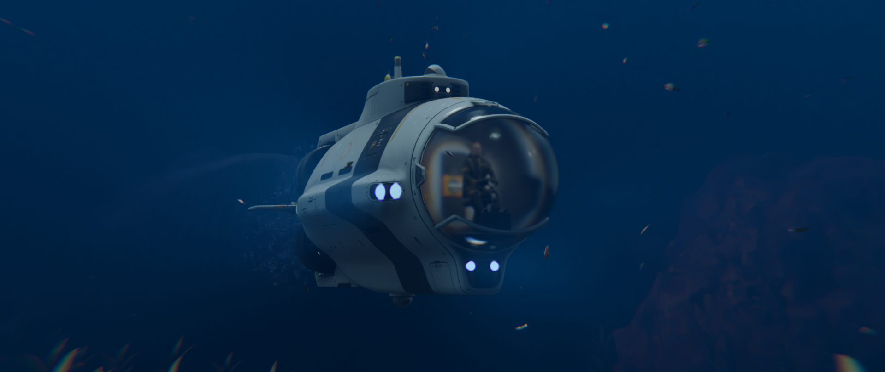
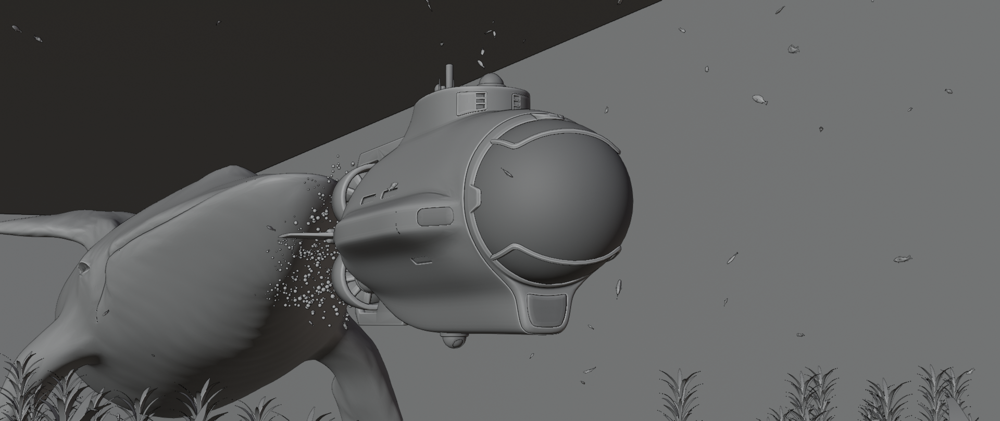

Surviving the Depths
This video was created for the Pwnisher Endless Engines contest. The idea behind the scene was that a whale would be chasing the beloved submarine. This is my first time participating in the contest, and it helped me to improve my skills and create something creative from a pre-planned idea.
-

Static rendering image
-
Final rendered scene
-

Static image of without the application of materials
-
Base scene without materials or volumetric effects
-

Blender